这，就是有“最后的香格里拉”之称，海拔 3900 米的亚丁村。修改行程来到这里，就是想 看看这最后的人间天堂是什么样的，可惜，虽然风景很美，但和国内绝大多数景点一样，管理混乱、 食宿宰客严重，门票也贵的离谱。唉，再一次验证了“景点不能去”的真理。可惜，可惜。
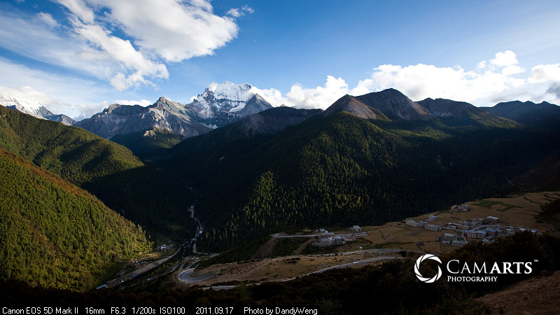
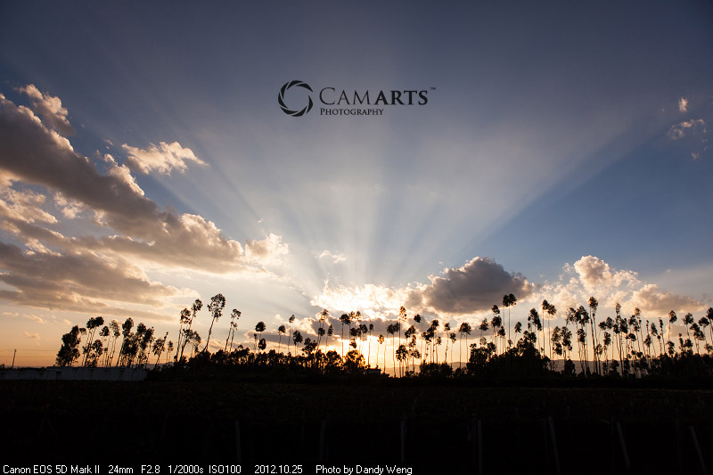
从四川的大山里绕着绕着，就来到了云南。这就是著名的澜沧江，从这里开始，就正式踏上滇藏公路，向西藏进发了。
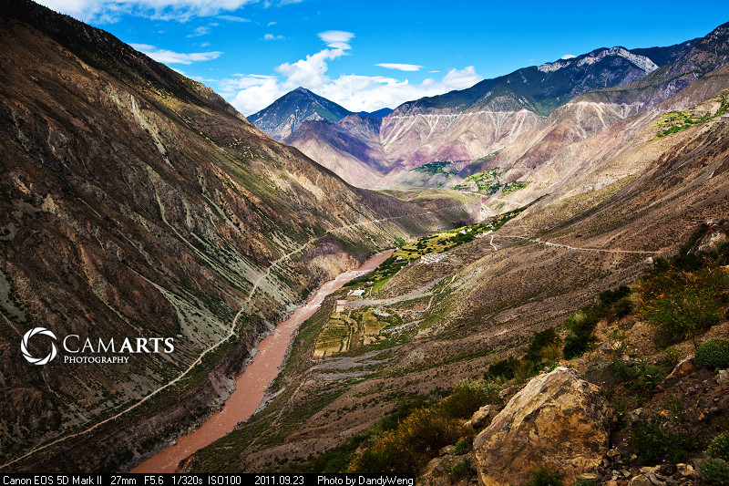
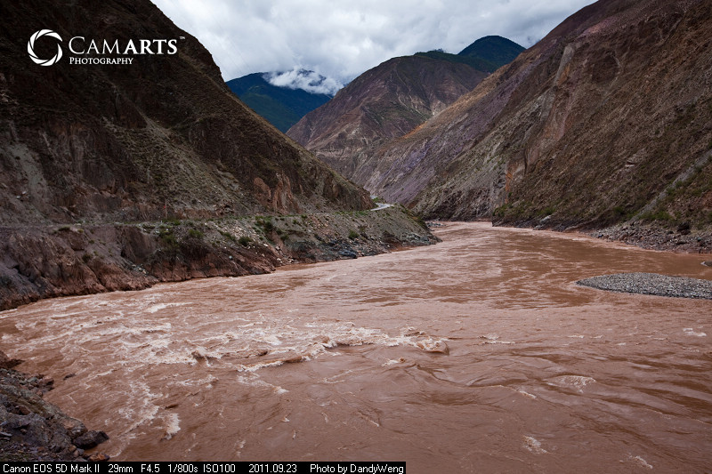
告别了壮观的熊猫海瀑布后继续沿着山间的栈道一路向下，不久便来到了素有“九寨一绝” 之称的五花海。虽然尚未至秋季的最佳时节，天气也阴沉沉的，但当它映入眼帘时，还是让我这个见过了不少美景的人不禁感叹，真是太美了！ 五花海汇集了九寨沟所有风光之精华，除了湖水中布满的朽木和钙华外，湖底竟然还有彩色的水草和藻类，与长满彩叶的山林和湖面的倒影交相辉映， 五光十色，真不愧是九寨沟中最精彩的一个海子。漫步在这个湖边，真是一种享受。
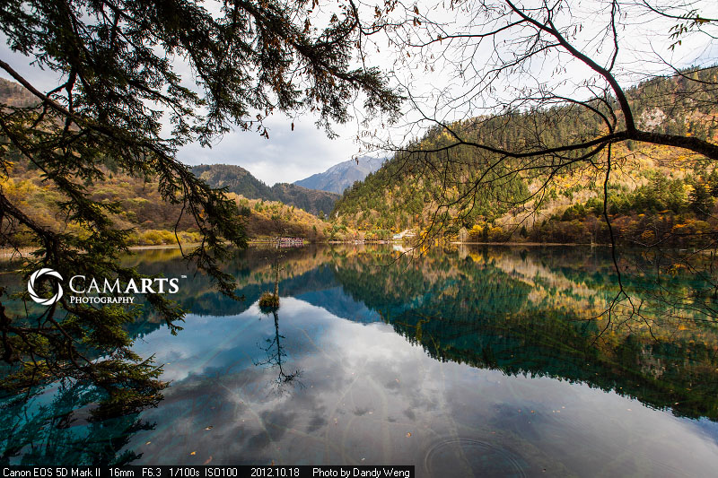
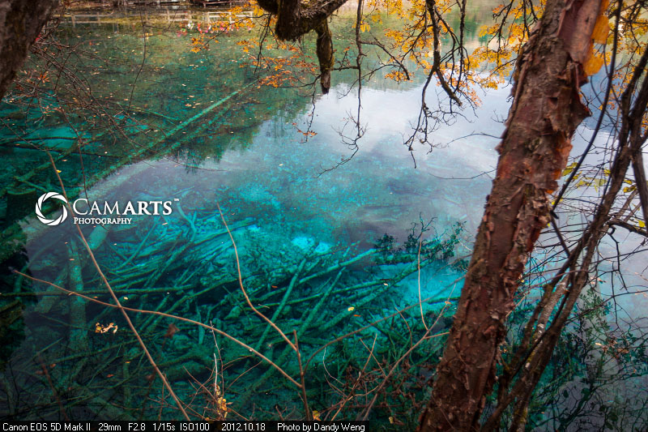
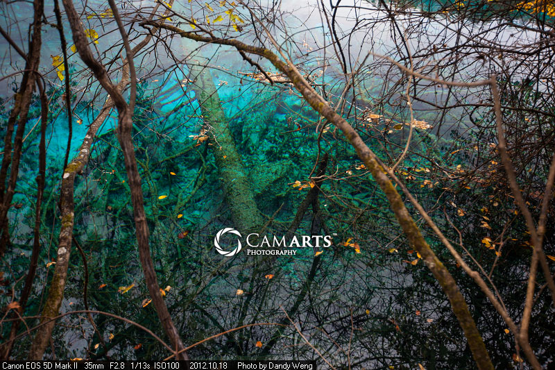
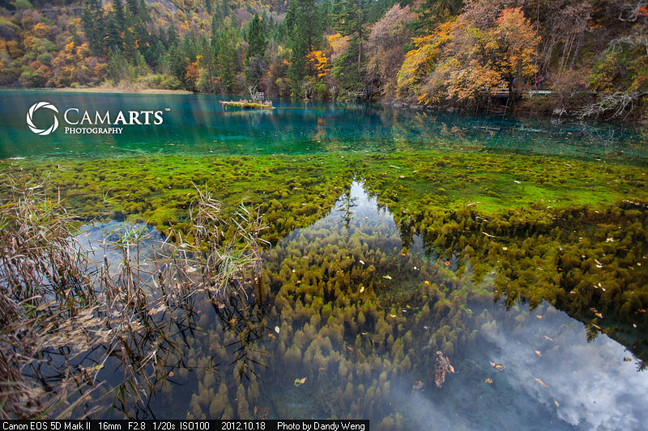
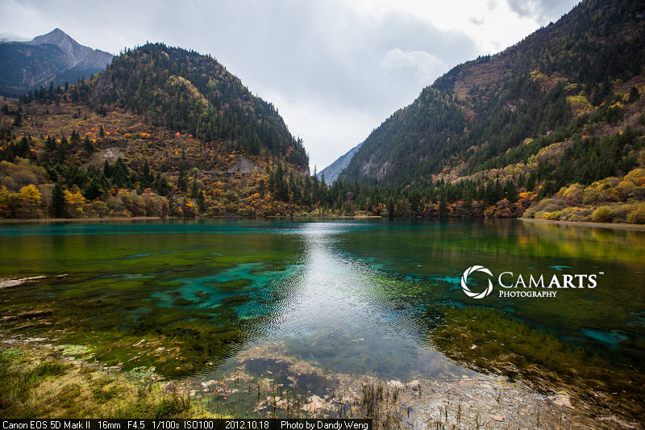
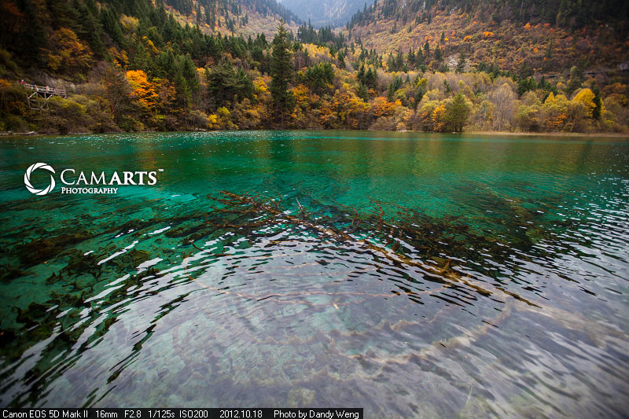
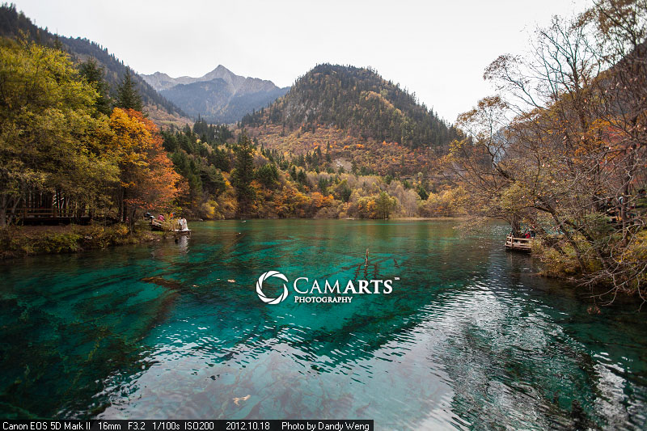
珍珠滩是五花海下 游一段宽阔平缓的浅滩，一簇簇灌木生长在滩间湍急的水流之中，挺有意思的。珍珠滩据说是因为滩底石头上溅起的水珠形似珍珠而得名，不过我倒是没看出来，大 概是因为天气的关系吧，感觉景色一般，于是简单拍了两张就匆匆往下游的珍珠滩瀑布走去，那里也许才是珍珠滩的精华所在。
我的博客网站